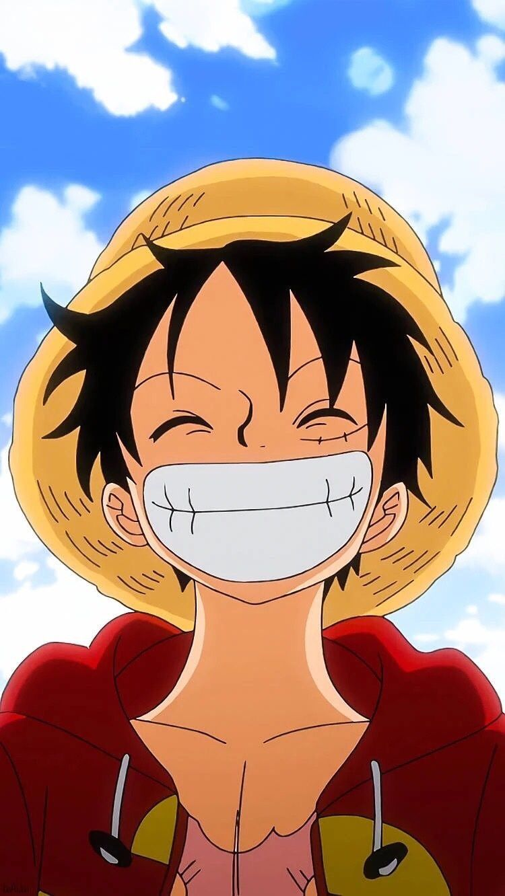
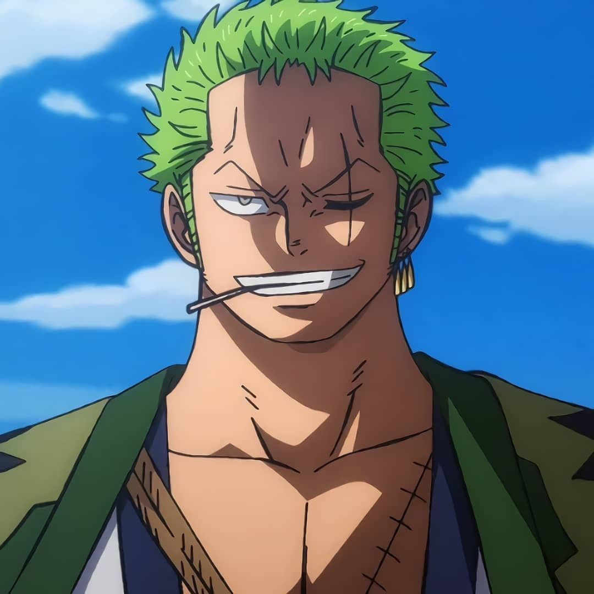
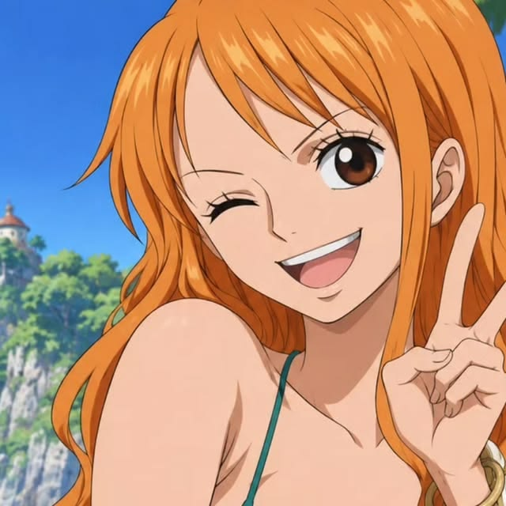
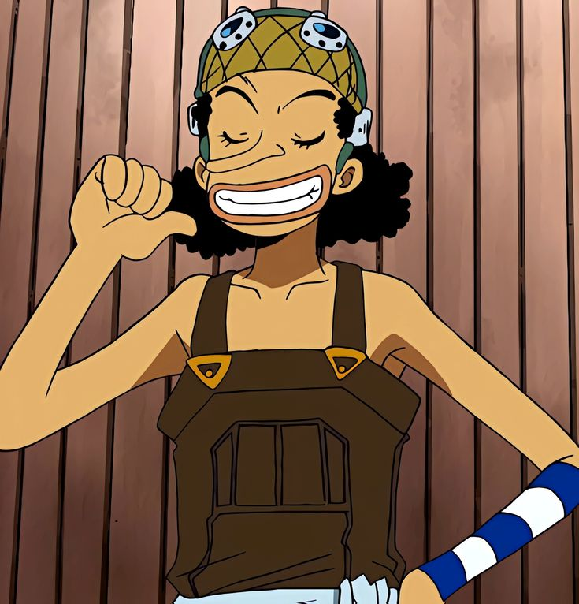
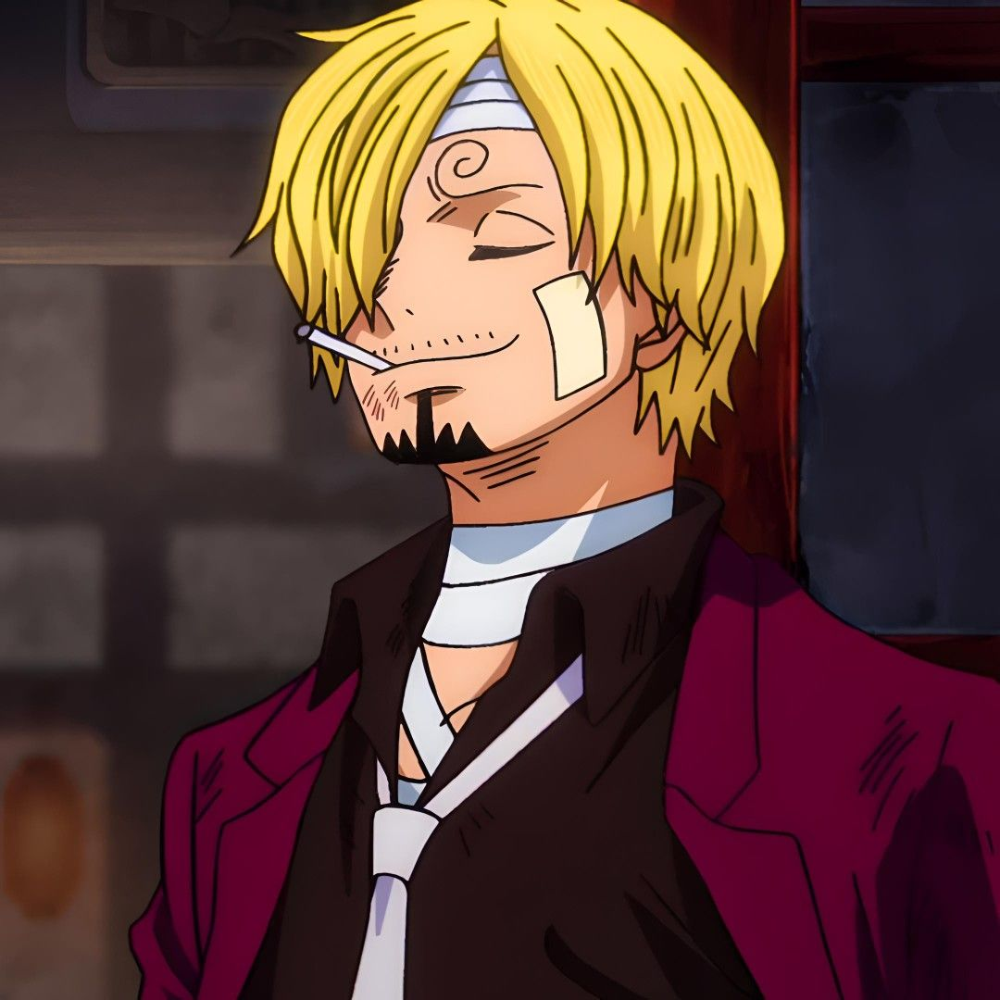
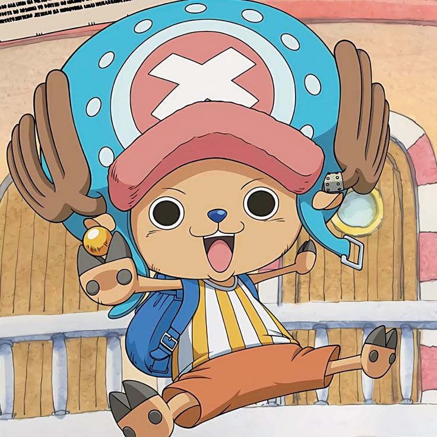
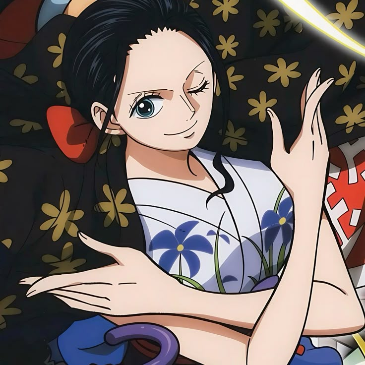
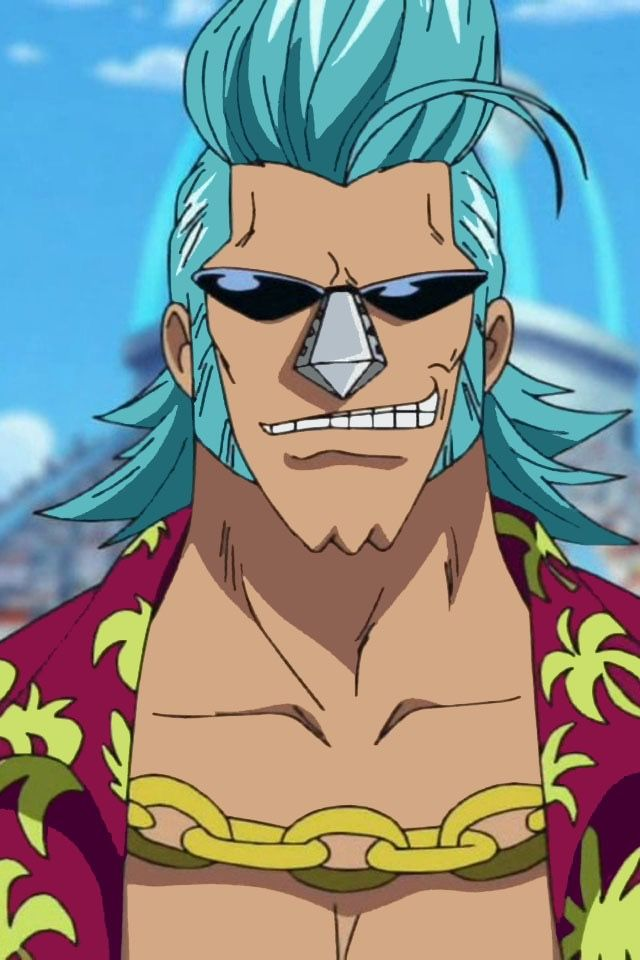
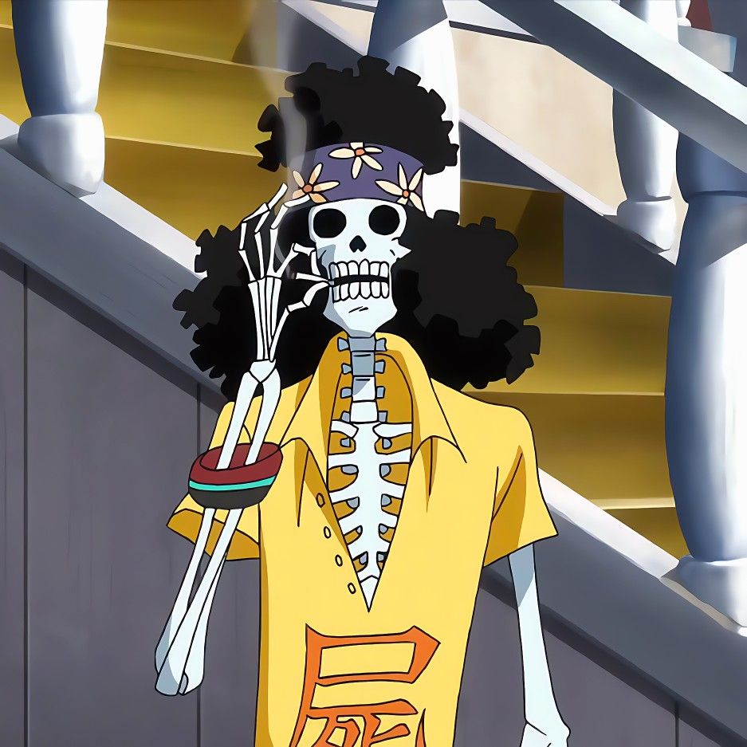
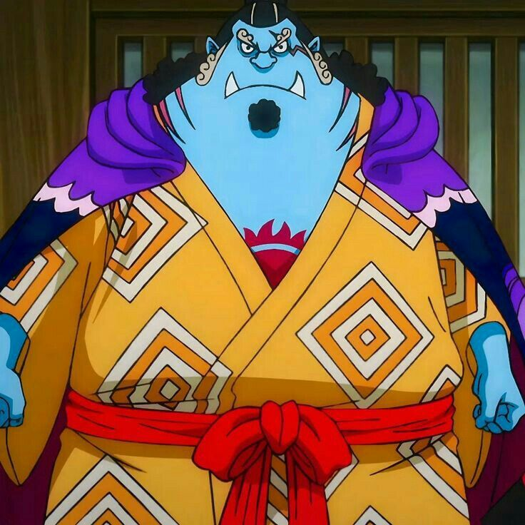

Los diez Mugiwara
1. Monkey D. Luffy

Luffy, capitán de los Sombrero de Paja.
Luffy es un pirata alegre y decidido. Su gran sueño es convertirse en el Rey de los Piratas y siempre
protege a sus amigos.
- Rol: capitán.
- Colores: rojo y amarillo.
- Fruta: Hito Hito no Mi, modelo Nika; durante gran parte de la historia se la
conoce como Gomu Gomu no Mi.
- Habilidad: su cuerpo tiene propiedades elásticas.
- Sueño: convertirse en el Rey de los Piratas.
Volver al menú
2. Roronoa Zoro

Zoro, espadachín de la tripulación.
Zoro fue el primer compañero de Luffy. Su disciplina y su estilo de tres espadas lo convierten en uno
de los combatientes principales del grupo.
- Rol: espadachín y combatiente.
- Colores: verde y negro.
- Fruta: ninguna.
- Habilidad: combate con tres espadas.
- Sueño: ser el mejor espadachín del mundo.
Volver al menú
3. Nami

Nami, navegante.
Nami interpreta el clima, traza rutas y guía al barco por mares peligrosos. También es experta en
cartografía.
- Rol: navegante.
- Colores: naranja y azul.
- Fruta: ninguna.
- Habilidad: navegación y uso del Clima-Tact.
- Sueño: dibujar un mapa de todo el mundo.
Volver al menú
4. Usopp

Usopp, francotirador.
Usopp destaca por su puntería, sus inventos y sus historias. Aunque siente miedo, se esfuerza por
ayudar a sus compañeros.
- Rol: francotirador.
- Colores: amarillo y marrón.
- Fruta: ninguna.
- Habilidad: disparos de larga distancia e inventos.
- Sueño: convertirse en un valiente guerrero del mar.
Volver al menú
5. Sanji

Sanji, cocinero.
Sanji prepara la comida de todos y procura que nadie pase hambre. En combate utiliza principalmente
sus piernas.
- Rol: cocinero.
- Colores: negro y azul.
- Fruta: ninguna.
- Habilidad: cocina y patadas de combate.
- Sueño: encontrar el All Blue.
Volver al menú
6. Tony Tony Chopper

Chopper, médico.
Chopper es un reno que adquirió capacidades humanas gracias a una fruta del diablo. Cuida la salud de
toda la tripulación.
- Rol: médico.
- Colores: rosa y azul.
- Fruta: Hito Hito no Mi.
- Habilidad: transforma su cuerpo y practica la medicina.
- Sueño: llegar a ser un médico capaz de curar cualquier enfermedad.
Volver al menú
7. Nico Robin

Robin, arqueóloga.
Robin estudia la historia y puede leer los poneglyphs. Busca descubrir lo ocurrido durante el Siglo
Vacío.
- Rol: arqueóloga.
- Colores: morado y negro.
- Fruta: Hana Hana no Mi.
- Habilidad: hace brotar partes de su cuerpo en distintas superficies.
- Sueño: conocer la verdadera historia del mundo.
Volver al menú
8. Franky

Franky, carpintero naval.
Franky es un cíborg e ingeniero que construyó el Thousand Sunny y se encarga de repararlo durante el
viaje.
- Rol: carpintero naval.
- Colores: azul y rojo.
- Fruta: ninguna.
- Habilidad: ingeniería, construcción y tecnología cíborg.
- Sueño: ver a su barco llegar al final del viaje.
Volver al menú
9. Brook

Brook, músico.
Brook es un músico y espadachín que volvió a la vida por el poder de su fruta. Su música anima a la
tripulación.
- Rol: músico.
- Colores: blanco y negro.
- Fruta: Yomi Yomi no Mi.
- Habilidad: música, esgrima y poderes relacionados con su alma.
- Sueño: reencontrarse con Laboon.
Volver al menú
10. Jinbe

Jinbe, timonel.
Jinbe es un hombre pez experimentado. Su fortaleza y su conocimiento del mar ayudan a conducir el
Sunny.
- Rol: timonel.
- Colores: azul y naranja.
- Fruta: ninguna.
- Habilidad: karate gyojin y navegación como timonel.
- Sueño: contribuir a la convivencia entre humanos y hombres pez.
Volver al menú